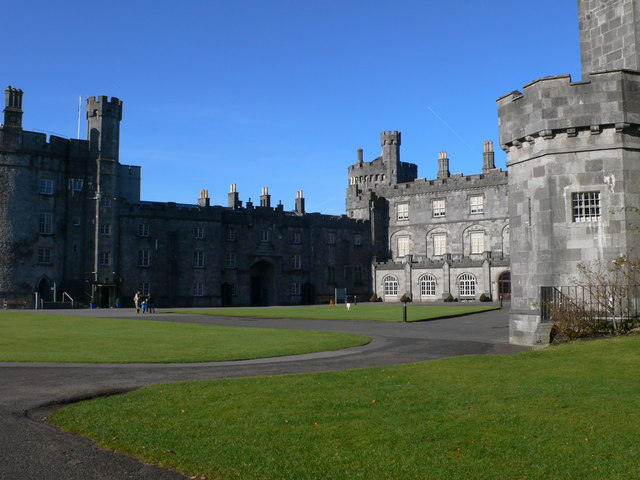

Kilkenny
Kilkenny is one of Ireland’s most beautiful small, medieval cities with not only wonderful shops and pubs to explore but also medieval castles and cathedrals. The Kilkenny Castle was the main purpose of my visit as I engaged in a self-guided tour of the inside of the castle. The detailed architecture and artwork inside may be even more impressive than the outside, so I would definitely recommend booking a visit. If it is a nice day, the grounds by the castle also have so much to offer with plenty of picnic space and walking trails.